$100 달러 오픈 슈퍼 컴퓨터
성능시험2 - HPL을 통한 객관적 성능
고성능 린팩(HPL) 이란?
- HPL (High Performance Linpack) 은 전세계 HPC (High Performance Computer) 성능을 측정하기 위해 고안된 Linpack 이다.
- HPL을 통해 임의 작업을 부여해줌으로써 병렬컴퓨터의 성능을 객관적인 수치로 출력할 수 있다.
HPL 설치방법
- 선수 프로그램 : gfortran, MPICH2, mpich2-dev, BLAS
- 이중 MPICH2 와 gfortran 은 라즈베리파이 클러스터링 작업에서 설치완료된 상태 (제작 메뉴얼 참조).
1. MPICH2 파일 복사
앞서 제작한 클러스터 라즈베리파이에 설치된 MPICH2 파일을 손상하지 않기 위해 MPICH2 파일을 다른 디렉토리로 복사한다.
- 라즈베리파이의 /usr/local/ 에 새로운 디렉토리를 만든다.
$ mkdir mpich2
/home/pi/mpich2/mpich-3.1/의 모든파일을 위 디렉토리/usr/local/mpich2/로 복사해온다./home/pi/mpich2/mpich-3.1에서 다음 명령어를 실행한다.$ sudo cp -rf * /usr/local/mpich2
2. 나머지 선수 프로그램 설치
$ sudo apt-get install libatlas-base-dev libmpich2-dev gfortran3. HPL 프로그램 다운로드
- 다운로드할 위치는 /home/pi/ 디렉토리로 한다.
$ sudo wget http://www.netlib.org/benchmark/hpl/hpl-2.1.tar.gz
- hpl 프로그램을 압축해제한다.
$ tar xf hpl-2.1.tar.gz
hpl-2.1/setup/디렉토리의make_generic쉘을 불러낸다.$ cd hpl-2.1/setup$ sh make_generic
hpl-2.1/디렉토리에Make.UNKOWN파일을Make.rpi파일로 복사한다.$ cd ..$cp setup/Make.UNKNOWN Make.rpi
4. Make 파일내용 수정하기
Make.rpi파일을 수행하기에 앞서, 해당 파일을 개인의 라즈베리파이 설정에 맞게 수정한다.
ARCH = rpi
TOPdir = /home/pi/hpl-2.1
MPdic = /usr/local/mpich2
MPinc = -I $(MPdir)/include
MPlib = /home/pi/mpi-build/lib/.lib/libmpich.a
LAdir = /usr/lib/atlas-base/
LAlib = $(LAdir)/libf77blas.a $(LAdir)/libatlas.a- TOPdir 은 hpl-2.1 디렉토리가 있는 경로로 설정한다.
- MPdir 은 mpich2 가 있는 디렉토리 경로로 설정한다.
- MPlib 은 libmpich.a 파일이 있는 경로로 한다.
- 만약 libmpich.a 파일의 경로를 모를 경우 :
$ sudo find / -name "libmpich.a"로 찾는다.
- LAdir 은 atlas-base 디렉토리가 있는 경로로 설정한다.
5. Make 파일을 실행한다.
$ make arch=rpi- 여기까지 정상적으로 진행되면,
/home/pi/hpl-2.1/bin/rpi/디렉토리에HPL.dat파일과xhpl파일이 생긴다.$cd bin/rpi: 해당 디렉토리로 이동한다.
HPL 실행하기 (단일 노드)
- HPL.dat 파일을 아래와 같이 수정하고 저장하고 빠져나온다.
$ sudo nano HPL.dat 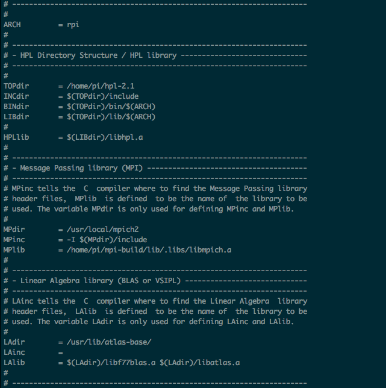
HPLinpack benchmark input file
Innovative Computing Laboratory, University of Tennessee
HPL.out output file name (if any)
6 device out (6=stdout,7=stderr,file)
1 # of problems sizes (N)
5040 Ns
1 # of NBs
128 NBs
0 PMAP process mapping (0=Row-,1=Column-major)
1 # of process grids (P x Q)
1 Ps
1 Qs
16.0 threshold
1 # of panel fact
2 PFACTs (0=left, 1=Crout, 2=Right)
1 # of recursive stopping criterium
4 NBMINs (>= 1)
1 # of panels in recursion
2 NDIVs
1 # of recursive panel fact.
1 RFACTs (0=left, 1=Crout, 2=Right)
1 # of broadcast
1 BCASTs (0=1rg,1=1rM,2=2rg,3=2rM,4=Lng,5=LnM)
1 # of lookahead depth
1 DEPTHs (>=0)
2 SWAP (0=bin-exch,1=long,2=mix)
64 swapping threshold
0 L1 in (0=transposed,1=no-transposed) form
0 U in (0=transposed,1=no-transposed) form
1 Equilibration (0=no,1=yes)
8 memory alignment in double (> 0)xhpl파일을 실행한다.
$./xhpl- 결과를 기다린다. 성공적으로 진행되면 아래와 같은 과정을 출력한다.
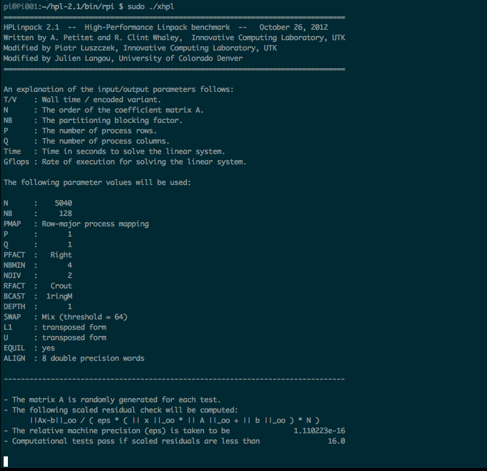
- 기다리면 아래와 같은 결과를 출력한다. (컴퓨터 환경에 따라 소요시간이 다를 수 있다.) 여기서 Time은 작업을 수행하는데 걸린시간(sec)이고, Gflops는 작업수행 속도이다. (위 사진은 대략 540.68초의 시간이 소요되었고, 1.579e-01 의 속도를 보였다.)
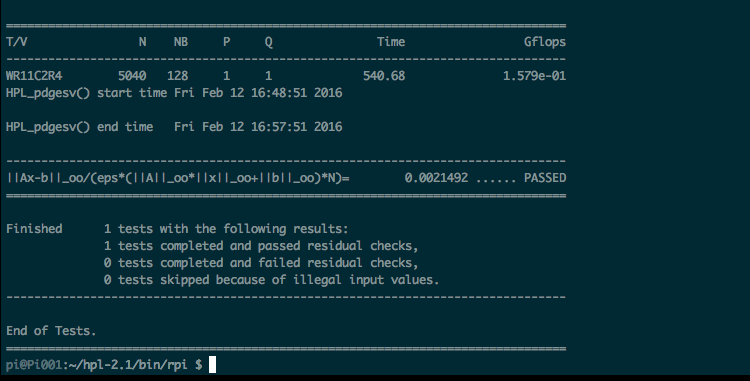
HPL 실행하기 (노드 다수)
먼저 수행할 모든 라즈베리파이에 위의 과정에 따라 HPL 프로그램을 설치한다.
HPL.dat파일의 ‘Ps * Qs’ 값 수정- 작업에 사용할 node의 갯수를 정하기 위해
Ps * Qs값만 수정하면 된다. - 허브서버로 동작할 라즈베리파이(pi01)의
/home/pi/hpl-2.1/bin/rpi에서nano편집기로Ps,Qs값을 편집한다. - 예를 들어 4개의 라즈베리파이를 이용한 HPL 작업을 수행하려면 위와 같이
Ps * Qs의 값이 4가 되게 지정해 주면 된다. - 저장하고 빠져나온다.
- 작업에 사용할 node의 갯수를 정하기 위해
$sudo nano HPL.dat1 # of process grids (P x Q)
1 Ps
4 Qsxhpl파일을 실행한다./home/pi/hpl-2.1/bin/rpi에서machinefile파일을 MPI로 동작시키기machinefile은 라즈베리파이 클러스터의 MPI 테스트를 위해 만들어두었던 연결된 모든 라즈베리파이의 ip가 기록된 파일이다.
$ mpiexec -f ~/machinefile -n 4 ./xhpl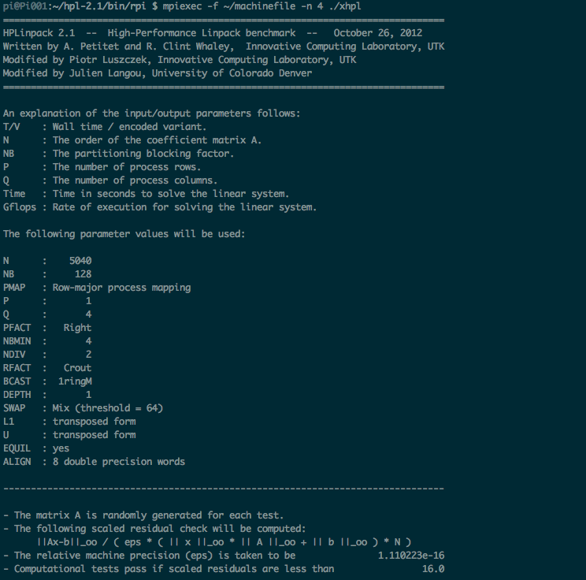
- 결과를 기다린다. 성공적으로 진행되면 아래와 같은 과정을 출력한다. 기다리면 아래와 같은 결과를 출력한다. (컴퓨터 환경에 따라 소요시간이 다를 수 있다.) 여기서 Time 은 작업을 수행하는데 걸린시간(sec)이고, Gflops는 작업수행 속도이다. (위 사진은 대략 157.77초의 시간이 소요되었고, 5.412e-01 의 속도를 보였다.)
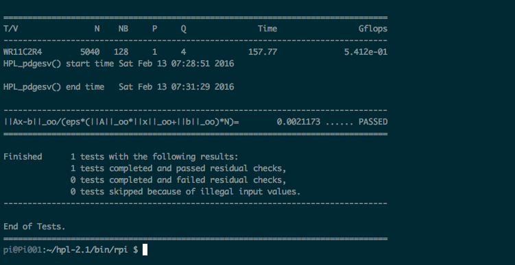
HPL.dat 파일 코드 분석
기본 정보 설정
- HPLinpack benchmark input file
- //input 파일의 제목에 해당한다.
- Innovative Computing Laboratory, University of Tennessee
- //해당 input 파일의 출처를 밝힌다.
- HPL.out output file name (if any)
- //해당 output 파일의 제목을 지정해준다.
- 6 device out (6=stdout,7=stderr,file)
- //해당 output 파일이 놓일 위치를 지칭한다.
- //3가지 경우가 존재하며, 6:standard output, 7:standard error, 다른 양의 정수: redirect to a file 을 지칭한다.
HPL 테스트 결과
결과의 정확한 비교를 위해 ‘Ps * Qs’ 값을 제외한 모든 내용은 변화시키지 않는다.
HPL 동작에 한 개의 라즈베리파이만 사용.
HPL.dat 파일의 Ps * Qs 를 1로 설정한다.
여기서 Time 은 작업을 수행하는데 걸린시간(sec)이고, Gflops는 작업수행 속도이다. (위 사진은 대략 540.68초의 시간이 소요되었고, 1.579e-01 의 속도를 보였다.)
HPL 동작에 두 개의 라즈베리파이를 사용.
HPL.dat 파일의 Ps * Qs 를 2로 설정한다.
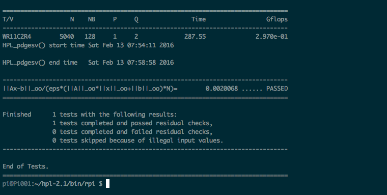
여기서 Time 은 작업을 수행하는데 걸린시간(sec)이고, Gflops는 작업수행 속도이다. (위 사진은 대략 287.55초의 시간이 소요되었고, 2.970e-01 의 속도를 보였다.)
HPL 동작에 세 개의 라즈베리파이를 사용.
HPL.dat 파일의 Ps * Qs 를 3으로 설정한다.
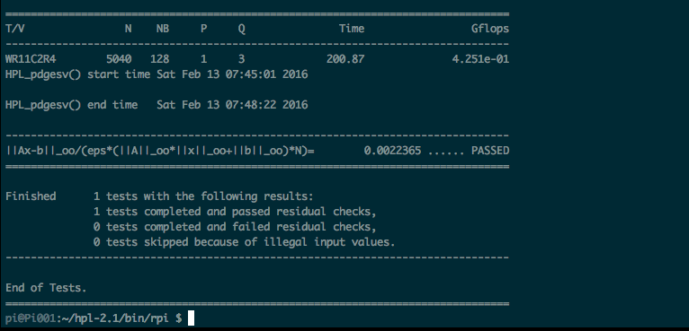
여기서 Time 은 작업을 수행하는데 걸린시간(sec)이고, Gflops는 작업수행 속도이다. (위 사진은 대략 200.87초의 시간이 소요되었고, 4.251e-01 의 속도를 보였다.)
HPL 동작에 네 개의 라즈베리파이를 사용.
HPL.dat 파일의 Ps * Qs 를 4로 설정한다.
여기서 Time 은 작업을 수행하는데 걸린시간(sec)이고, Gflops는 작업수행 속도이다. (위 사진은 대략 157.77초의 시간이 소요되었고, 5.412e-01 의 속도를 보였다.)
HPL 테스트 결과 분석
단일노드에서 HPL 작업 비교
- 각각의 라즈베리파이 HPL 작업 시간(sec)
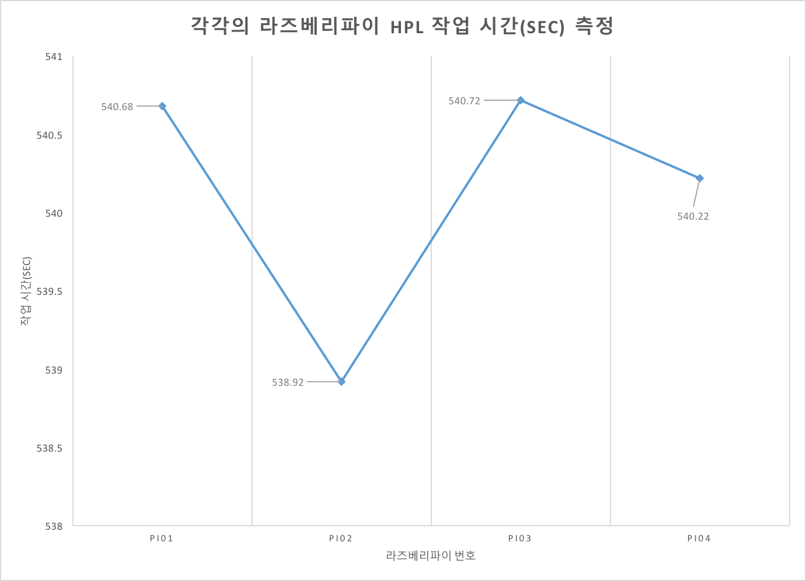
- 각각의 라즈베리파이 HPL 작업 속도(Gflops)
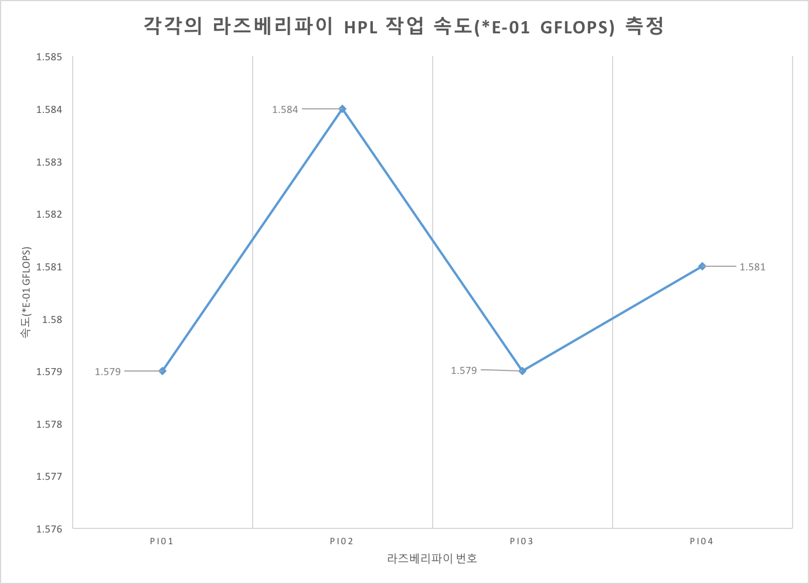
멀티노드에서 HPL 작업 비교
- 라즈베리파이 갯수에 따른 HPL 작업 시간(sec)
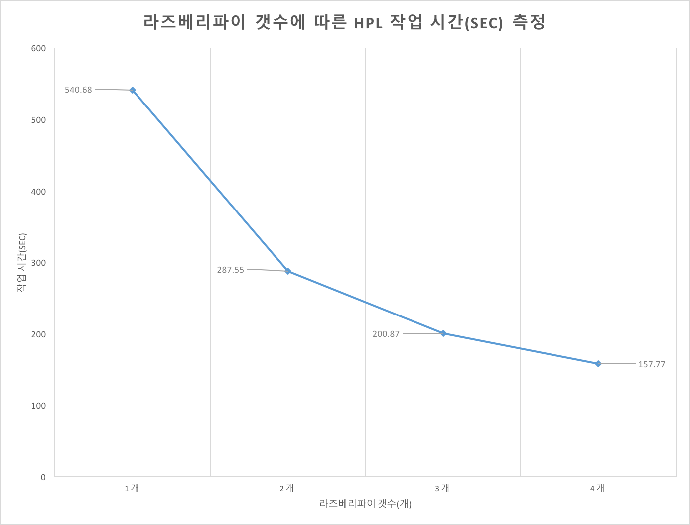
- 라즈베리파이 갯수에 따른 HPL 작업 속도(Gflops)
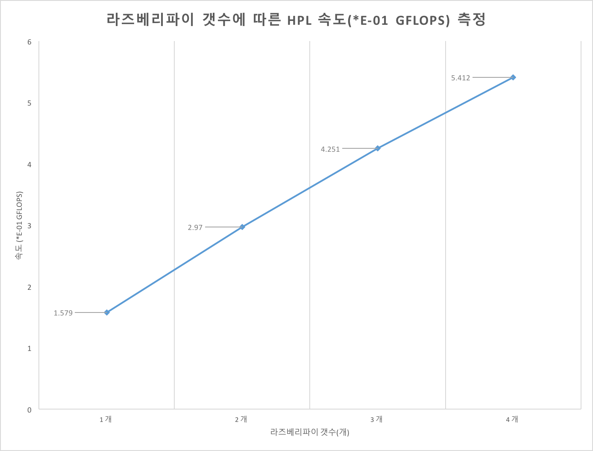
- 라즈베리파이 갯수에 따른 HPL 작업 속도(배)
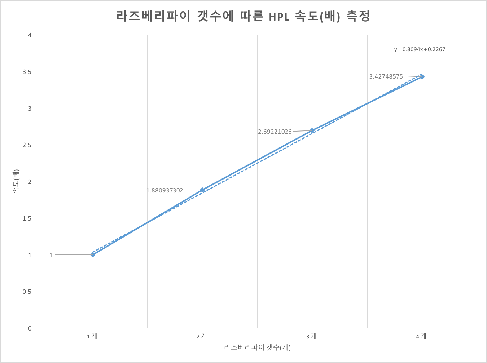